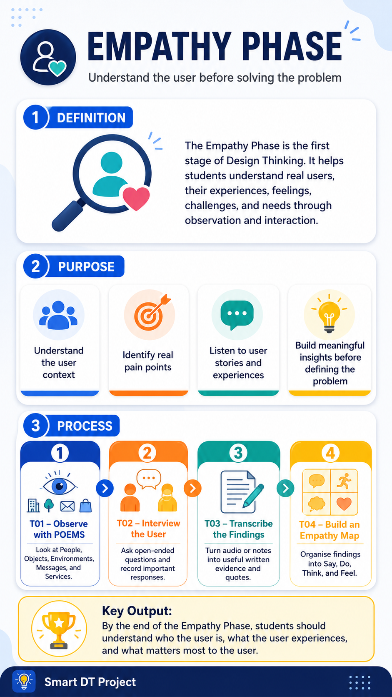

PHASE 01 · EMPATHY
Understand users before you solve.
Use T01–T04 to collect evidence, listen to users and organise findings before Define.
🕵️ Empathy Rule for Beginners
You are a detective, not a doctor. Collect evidence first. Do not suggest a solution yet.
Quick Info: Empathy Phase
The full poster/HTML guides teach the concept. The app gives a short Quick Fact before students fill in each input template.

One continuous case used in Phase 01
T01 POEMS: Observe a first-time batik workshop visitor.T02 Interview: Ask the visitor about the experience.T03 Transcription: Keep the visitor's real words as evidence.T04 Empathy Map: Sort findings into Say, Do, Think and Feel.
Phase 01 Templates
Each template has a compact Quick Fact card followed by input fields. Complete and save T01–T04 before the quiz.
T01 POEMS Observation Framework
Quick Fact: POEMS turns watching into evidence.
People · Objects · Environment · Messages · Services
What to writeRecord what you can see across the five lenses.
Common mistakeDo not guess feelings or give opinions. Write facts only.
Enough when1 real observation + all 5 POEMS boxes completed.
Mini caseVisitor reads the sign twice and watches others before trying batik.
T02 Interview Guide
Quick Fact: An interview guide keeps conversation focused.
Ask, listen, collect stories, actions, thoughts and feelings.
What to writeGoal, open-ended questions, roles and materials.
Common mistakeDo not ask leading questions like “Don’t you think this is confusing?”
Enough when1–2 users + 5–6 open-ended questions prepared.
Mini caseAsk the batik visitor what felt difficult and how they felt before trying.
T03 Transcription
Quick Fact: Transcription turns audio into written evidence.
Keep their words. Lose the noise.
What to writeAudio info, speaker labels, clean transcript and key quotes.
Common mistakeDo not change the user's meaning. Keep important quotes word-for-word.
Enough when3–4 key quotes + 1 short meaning/insight are written.
Mini case“I was scared I’d spoil the cloth” shows fear of making mistakes.
T04 Empathy Map
Quick Fact: An empathy map turns scattered notes into one clear user picture.
Say · Do · Think · Feel
What to writeSort interview evidence into Say, Do, Think and Feel.
Common mistakeDo not confuse a need with a solution. “Needs an app” is not a user need yet.
Enough whenAll 4 areas + pain point + user need are completed.
Mini caseUser says they want to try, but feels afraid of spoiling the cloth.
Completion checklist
Phase 01 Completion Quiz
Complete this after T01–T04. You need at least 3/5 before submitting Phase 01. Feedback appears after each answer.
Score not saved yet.